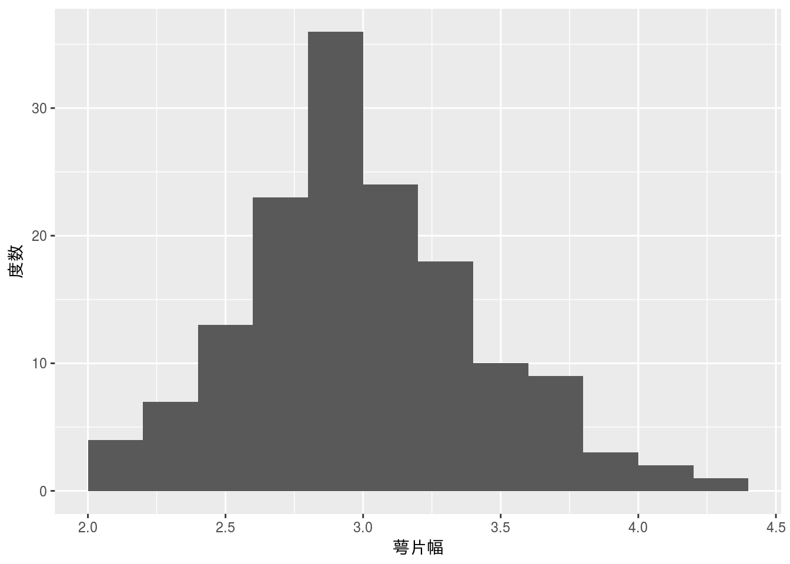
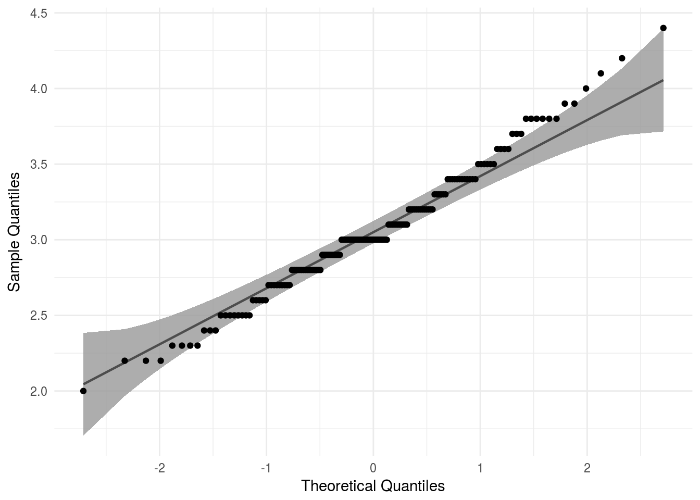
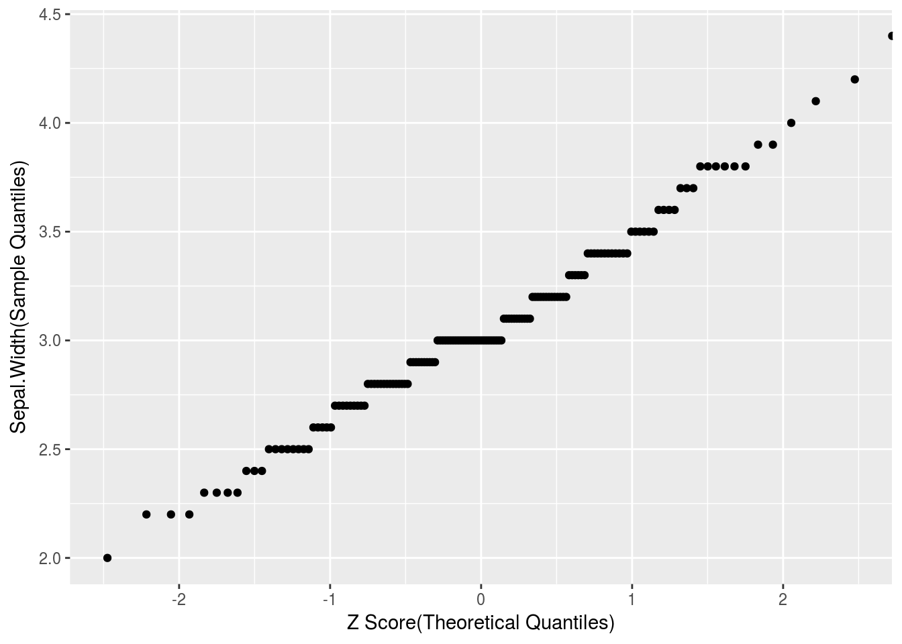

正規性の確認
様々な検定や推定において対象となる標本データの正規性を仮定している場合が多数あります。このような前提条件を無視して検定や推定を行った場合、結果の妥当性が疑問視される可能性が高いです。そこで、対象となる標本データに正規性があるかどうかを確認する必要があります。
標本データの正規性を確認する方法には以下のように主観的なものから検定のような客観的なものまで様々な方法があります。
- 分布形状の確認
- 正規確率プロット（正規QQプロット）
- 歪度と尖度
- 正規性の検定
以降、各方法に対してirisデータセットの萼片幅（Sepal.Width）を用いて実際にどのようになるか見てみます。
iris
必要なパッケージ
本ページのコードを実行するには標準パッケージ以外に以下の追加パッケージを読み込んでおく必要があります。
| Package | Description |
|---|---|
| e1071 | Misc Functions of the Department of Statistics |
| moments | Moments, cumulants, skewness, kurtosis and related tests |
| nortest | Test for Normality |
| tidyverse | Easily Install and Load the ‘Tidyverse’ |
| qqplotr | Quantile-Quantile Plot Extensions for ‘ggplot2’ |
| Package | Description | Link |
|---|---|---|
| e1071 | Misc Functions of the Department of Statistics | CRAN |
| moments | Moments, cumulants, skewness, kurtosis and related tests | CRAN |
| nortest | Test for Normality | CRAN |
| tidyverse | Easily Install and Load the ‘Tidyverse’ | CRAN |
| qqplotr | Quantile-Quantile Plot Extensions for ‘ggplot2’ | CRAN |
分布形状の確認
ヒストグラムを描くことで標本データの分布形状を確認することができます。概ね左右対象の山形状分布であれば正規分布にしたがっていると言えます。ただし、ヒストグラムは階級幅の取り方により形状が変わってしまいますので注意が必要です。
階級幅の求め方
階級幅を求めるには標本データに応じた階級数を決めて階級幅を決める方法があります。階級数を決める方法は様々ですが、以下のような方法が広く知られています。
| 方法 | Rでの関数 |
|---|---|
| スタージェスの公式（Sturges’ formula） | nclass.Sturges |
| スコットの選択（Scott’s choice） | nclass.scott |
| フリードマン-ダイアコニスの選択（Freedman–Diaconis’ choice） | nclass.FD |
上記以外にも平方根選択、\(L^2\)危険関数推定の最小化に基づく選択などがあります。また、標本データが金額のような場合には百円単位、千円単位というように分かりやすい階級幅が使われることもあります。
ヒストグラム
スタージェスの公式を用いてヒストグラムを描いてみます。
breaks <- pretty(iris$Sepal.Width, n = nclass.Sturges(iris$Sepal.Width))
iris %>%
tidyr::drop_na(Sepal.Width) %>%
ggplot2::ggplot(ggplot2::aes(x = Sepal.Width)) +
ggplot2::geom_histogram(breaks = breaks) +
ggplot2::labs(x = "萼片幅", y = "度数")
正規確率プロット
正規確率プロットは正規QQプロットとも呼ばれ、標本データが正規分布にしたがう場合の期待値と標本データそのものをプロットしたものです。プロットが一直線上に並べば標本データは正規分布にしたがっていると言えます。
iris %>%
tidyr::drop_na(Sepal.Width) %>%
ggplot2::ggplot(ggplot2::aes(sample = Sepal.Width)) +
qqplotr::stat_qq_band(distribution = "norm",
dparams = list(mean = 0, sd = 1)) +
qqplotr::stat_qq_line(distribution = "norm",
dparams = list(mean = 0, sd = 1)) +
qqplotr::stat_qq_point(distribution = "norm",
dparams = list(mean = 0, sd = 1)) +
ggplot2::theme_minimal() +
ggplot2::labs(x = "Theoretical Quantiles", y = "Sample Quantiles")
正規確率プロットの考え方
正規確率プロット（正規QQプロット）は名前の通り横軸を正規分布の分位数、縦軸を対象データの分位数を座標としてプロットします。
- 対象データを昇順に並べかえる
- 順位を割り当て分位数（％順位）を計算する
- 分位数（％順位）から（標準）Zスコアを計算する
- （標準）Zスコアを横軸に対象データを縦軸にプロットする
iris %>%
tidyr::drop_na(Sepal.Width) %>%
dplyr::arrange(Sepal.Width) %>% # 昇順に並べる
tibble::rownames_to_column("rank") %>% # 順位を割り当てる
dplyr::mutate(prank = as.numeric(rank)/n()) %>%
# ％順位を計算する
dplyr::mutate(sz = qnorm(prank, mean = 0, sd = 1)) %>%
# 標準Zスコアを計算する
ggplot2::ggplot(ggplot2::aes(x = sz)) +
ggplot2::geom_point(ggplot2::aes(y = Sepal.Width)) +
ggplot2::labs(x = "Z Score(Theoretical Quantiles)",
y = "Sepal.Width(Sample Quantiles)")
なお、QQプロットの描画自体についてはこちらを参照してください。
歪度と尖度
歪度とは分布の非対象性を示す指標で尖度とは分布の尖り具合を示す指標です。
| Rでの関数 | |
|---|---|
| 歪度 | e1071::skewness, moments::skewness など |
| 尖度 | e1071::kurtosis, moments::kurtosis など |
正規分布の場合、一般的に歪度と尖度は下表のようになり、二種類の定義が存在していることに注意して下さい。RやExcelでは「尖度\(= 0\)」の定義を用いています。
| 定義 #1 | 定義 #2 | Sepal.Width | |
|---|---|---|---|
| 歪度 | 0 | 0 | 0.3126147 |
| 尖度 | 3 | 0 | 0.1387047 |
歪度と尖度を用いた検定もありますが、ここでは省略します。検定の関数はmomentsパッケージ などに実装されています。
正規性の検定
正規性の検定には以下のように様々な手法があります。
| 検定 | Rでの関数 | 備考 |
|---|---|---|
| Shapiro-Wilk | shapiro.test |
代表的な正規性の検定 |
| Kolmogorov-Smirnov (Lillefors) | nortest::lillie.test |
標本データ数が大きな場合 |
| Kolmogorov-Smirnov | ks.test |
|
| Anderson–Darling | nortest::ad.test |
分布の裾を厳密に見たい場合 |
| 尖度と歪度によるオムニバス検定 | 本検定は扱いません | |
| D’Agostino | 同上（歪度、尖度を用いた検定） |
シャピロ-ウィルク検定
恐らく正規性の検定の中でも最も有名な仮説検定がシャピロ-ウィルクの正規性検定だと思われます。
\[H_0 : \mbox{標本データは正規母集団からサンプリングされたものである}\]
shapiro.test(iris$Sepal.Width) %>%
broom::tidy()
コルモゴロフ-スミルノフ検定
コルモゴロフ-スミルノフ検定は、改良版のリリフォース(Lilliefors)検定と元になったコルモゴロフ-スミルノフ検定の二つがあります。
リリフォース検定
正規分布に関する検定はリリフォースによる改良があり“Lilliefors検定”と呼ばれることがあります。
\[H_0 : \mbox{標本は正規母集団からサンプリングされたものである}\]
nortest::lillie.test(iris$Sepal.Width) %>%
broom::tidy()
コルモゴロフ-スミノフ検定
二つの標本を比較するノンパラメトリック検定。“KS検定”と略される場合もあり、標本数が大きい場合に向いていると言われています。標本数の目安としては2,000を目安にしてシャピロ-ウィルク検定と切り替える統計ソフト もあります。
\[H_0 : \mbox{二つの分布は等しい}\]
ks.test(iris$Sepal.Width, "pnorm") %>%
broom::tidy()
アンダーソン-ダーリング検定
アンダーソン-ダーリング検定はコルモゴロフ-スミノフ検定に比べると分布の裾（テール）での一致性が強く反映されるため裾（テール）の部分のリスクが重要な場合にに使われます。
\[H_0 : \mbox{標本は正規母集団からサンプリングされたものである}\]
nortest::ad.test(iris$Sepal.Width) %>%
broom::tidy()